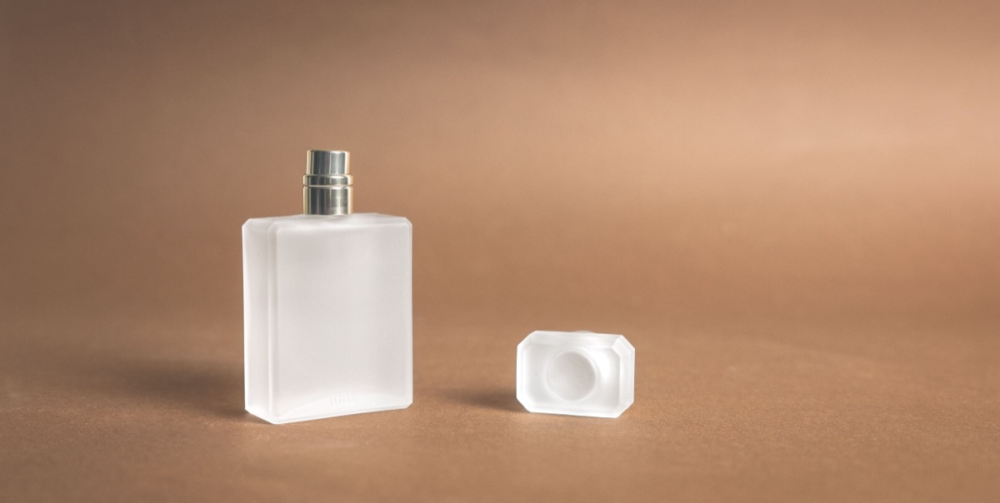

2 Élles EditRadarEm Pauta
Max Mara lança seu primeiro perfume da história
Depois de mais de sete décadas só de moda, a grife italiana estreia em fragrâncias com a Shiseido, e Florence Pugh é a primeira embaixadora

Foto: Pexels
A Max Mara, grife italiana fundada em 1951 e conhecida sobretudo pelos casacos de lã, vai lançar globalmente sua primeira fragrância no dia 24 de agosto de 2026 — depois de mais de sete décadas produzindo só moda. A parceria é com a Shiseido, gigante japonesa de beleza, e tem a atriz indicada ao Oscar Florence Pugh como primeira embaixadora da linha.
Um acordo que já vem de 2024
A entrada da Max Mara em perfumaria não é decisão de última hora: o acordo de licenciamento com a Shiseido foi assinado em julho de 2024, dando à companhia japonesa responsabilidade pelo desenvolvimento, fabricação e distribuição global da fragrância. É o mesmo modelo usado por boa parte das grifes de moda que não têm estrutura própria de perfumaria — terceirizar pra um grupo de beleza especializado, mantendo controle criativo sobre imagem e conceito.
Por que Florence Pugh
Pugh vem de uma sequência de papéis que a consolidaram como uma das atrizes mais bem cotadas da própria geração, com trânsito tanto em cinema autoral quanto em blockbuster. Pra uma marca estreando do zero em uma categoria inteiramente nova, ter um rosto já consolidado — mas ainda em ascensão — reduz o risco de a campanha passar despercebida.
O que esperar do lançamento
Marcas de moda que entram tarde em perfumaria costumam apostar em duas cartas: uma fragrância que dialogue visualmente com a identidade já estabelecida da grife (no caso da Max Mara, a estética de alfaiataria clássica e cores neutras), e uma campanha desproporcional ao tamanho real do lançamento, justamente pra compensar a ausência de histórico na categoria. Com a data de lançamento batendo ainda em agosto, é questão de semanas até o mercado ver se a aposta se confirma.
Produzido com ajuda de Inteligência Artificial.